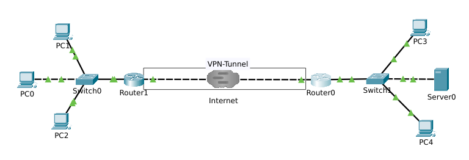
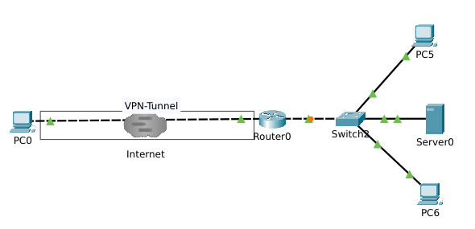
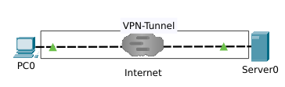

IT-Technik Netzwerkgrundlagen
Unter einem VPN versteht man eine Reihe von Protokollen, die eine verschlüsselte Verbindung zwischen einzelnen Geräten oder ganzen LANs über das Internet oder ein anderes WAN ermöglichen.
Die verschlüsselte Verbindung wird Tunnel genannt und wirkt aus Sicht der beteiligten Geräte wie ein direkte Verbindung. Man kann sich einen VPN-Tunnel als virtuelles Kabel vorstellen.
Das verbreiteste und erprobteste Protokoll zum Aufbau von VPNs ist das Protokoll Internet Protocol Security. Es arbeitet direkt auf dem Networklayer (OSI Layer 3).
Seit 2015 bietet das Wireguard-Protocol eine Alternativer, die einfacher einzurichten und deutlich schneller als IPsec. Letzteres gilt vor seit dieses Protokoll im Linuxkernel integriet ist.
Die dritte relevante Alternative ist OpenVPN, dass ein VPN auf Grundlage von SSL aufbaut.
IPsec nutzt verschiedene Komponenten, um …
der Daten zu garantieren:
Wireguard bietet gegenüber IPsec einige Vorteile (wird aber von deutlich weniger Netzwerkgeräten unterstützt):
Auch LAN-to-LAN oder Gateway-to-Gateway: Vertrauensstellung zwischen zwei Routern, die VPN-Gateways genannt werden. Zwei LANs werden mit einander verbunden. Tunnelmodus

Abbildung 1: Site-to-Site-VPN
Auch Host-to-Gateway oder Remote-Access: Vertrauensstellung zwischen einem Host und einem VPN-Gateways. Ein Rechner (z. B. im Homeoffice) wird mit einem LAN (z. B. Unternehmen) verbunden. In der Regel Tunnelmodus.

Abbildung 2: End-to-Site-VPN
Auch Host-to-Host, Peer-to-Peer oder Remote-Desktop: Vertrauensstellung zwischen zwei Hosts. Zwei Rechner werden mit einander verbunden. Transportmodus.

Abbildung 3: End-to-End-VPN
IPsec arbeitet zur Vertrauensstellung etweder mit Zertifikaten oder mit Pre-Shared-Keys, wobei Zertifikatesicherere sind. Der Pre-Shared-Key ist ein beiden Seiten bekanntes Geheimnis (Passwort). Von diesem wird auf jeder Seite ein Hashwert mit einem zuvor ausgehandelten Hashverfahren gebildet, der dann übertragen und mit dem selbsterstellten Hashwert verglichen wird. Bei Übereinstimmung wird die Ipsec-Verbindung akzeptiert.Allerdings kann man (wenn der PSK nicht lang und komplex genug ist) mit Hilfe von Hashtables einen abgefangenen PSK rekonstruieren.